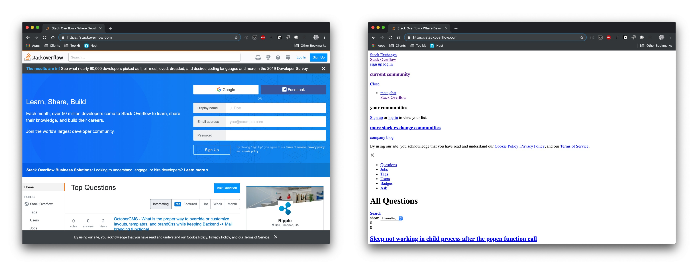

History of CSS
Hakon Wium Lie in 1991 at MIT
Hakon Wium Lie in 1991 at MIT
CERN - the cradle of the Web.
CERN's public web terminal

Mosaic browser
I have an Idea!
Robert Cailliau, Founder of International World Wide Web Conference
Hakon Wium Lie and Bert Bos
Browsers

Internet Explorer 3
Netscape Navigator 4.0
Opera 3.5
Opera Software Office
Note: 'Ugly building. Beautiful browser.'
Opera Mini
Have you had this phone? :)
HTML page with CSS and without it

CSS example
.header {
font-size: 40px;
color: red;
}
Header with style name - header
CSS Flexboxes
CSS-Desktop
CSS Flexboxes
CSS-Mobile